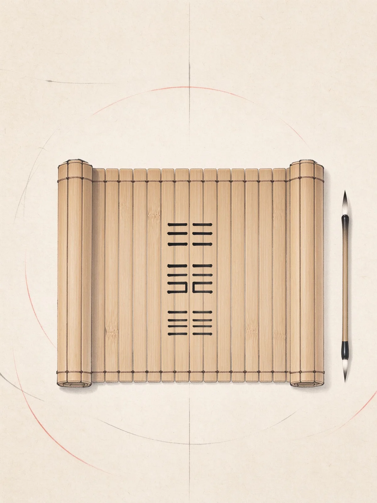
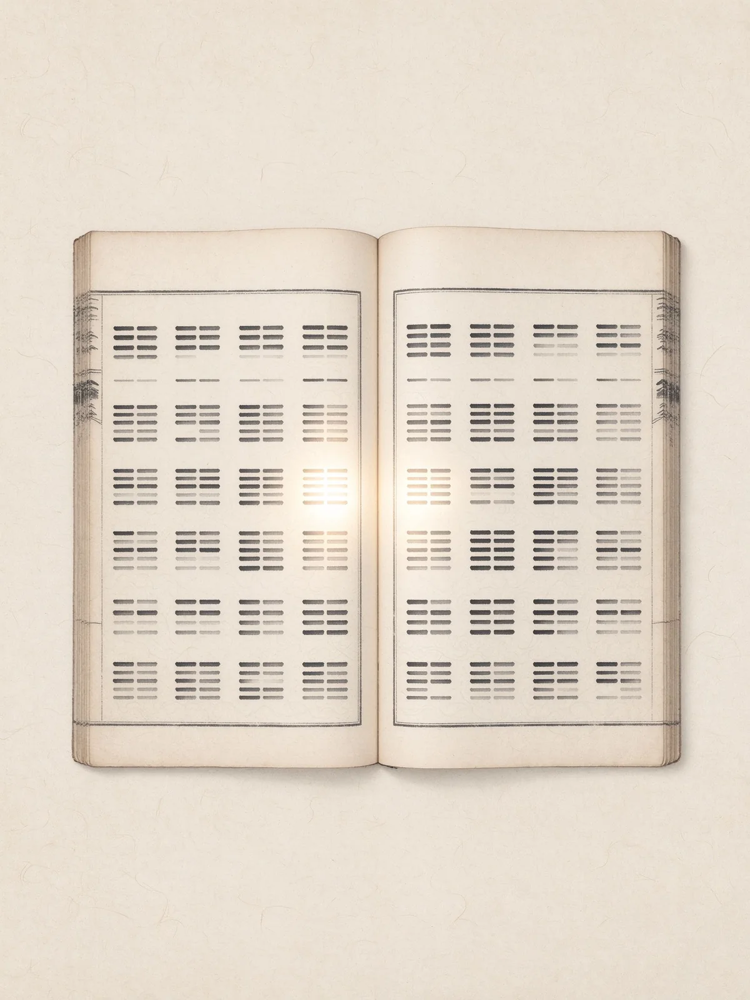
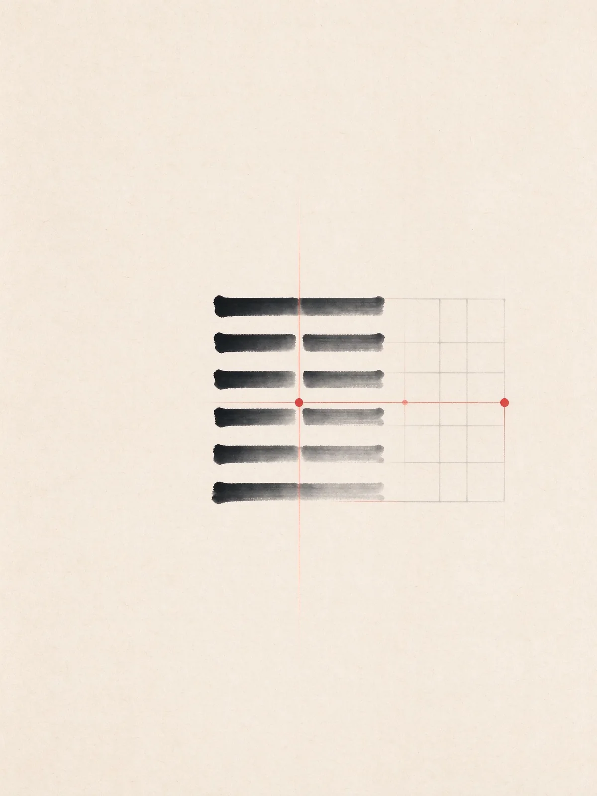
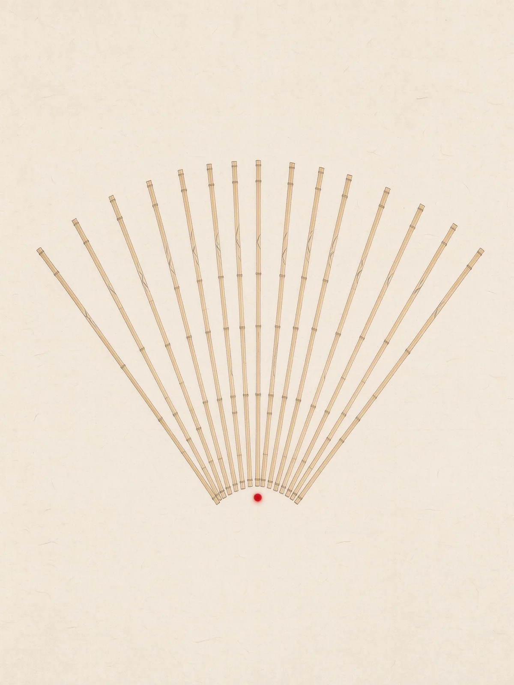
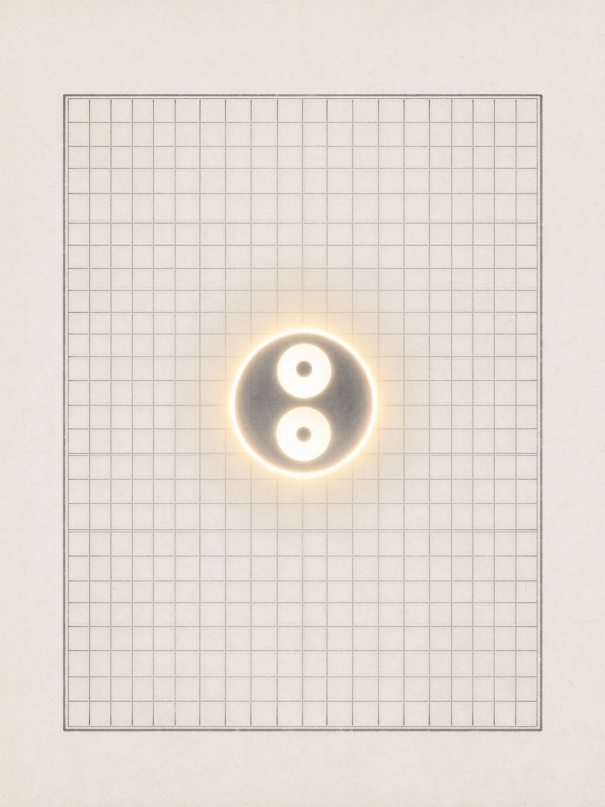
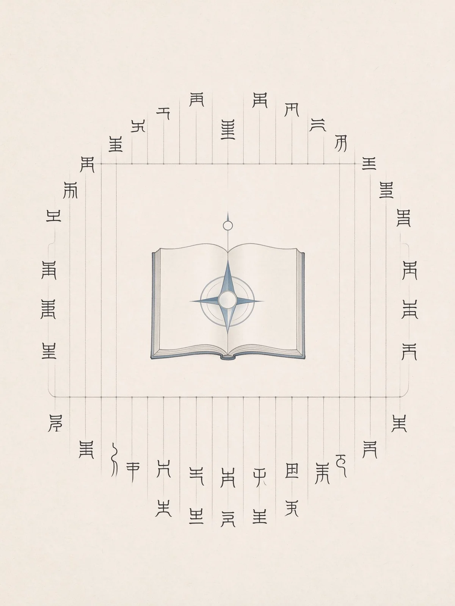

九大分類，一條主線走完
入門 → 卦 → 結構 → 傳 → 占 → 史 → 用 → 查 → 專題。每一類都有分類總覽，不用在網路上一邊讀一邊猜。

易經入門
從零開始：易經是什麼、陰陽怎麼運作、三個月怎麼讀完一輪。

六十四卦
卦序邏輯、重點卦逐卦白話、64 卦一覽速查表，以及 64 則實務案例。

卦象結構
爻、位、應、錯綜互卦：看懂一個卦是怎麼被拆解的。

十翼易傳
彖、象、繫辭、文言：易經的解釋層是怎麼長出來的。
占卜實務
金錢卦、蓍草法、梅花易數、六爻納甲，從怎麼問、怎麼解到該守的分寸。
易學簡史
從伏羲畫卦、文王演易，一路到漢易、王弼與宋易。
易經與生活
把卦用在決策、管理、情緒低谷、家庭與作息上，而不是只用來占。

易學辭典
元亨利貞、悔吝厲無咎、太極兩儀四象：名詞一次查清楚。

專業專題
深入門道：榮格共時性、萊布尼茲二進位、出土文獻、版本學、羅盤與五運六氣。
專業專題・深入門道
六個容易被講成玄談、其實有材料可查的題目：從心理學、數學、出土文獻、版本、羅盤到中醫，各給你一條可追的線索。
心理學
榮格與易經：共時性是怎麼被提出來的
心理學家為什麼替一本古書寫序？因為他在裡面找到「非因果的關聯」。
深入閱讀 → 數學萊布尼茲與二進位：那個常被講錯的故事
他先發明了二進位，才看到先天圖。順序很重要。
深入閱讀 → 文獻出土文獻裡的易經：帛書、秦簡與楚簡
你讀的「通行本」，其實是歷史淘汰後的版本。地下的版本長得不一樣。
深入閱讀 → 版本版本怎麼選：通行本、王弼本、朱熹本
同樣叫《周易》，翻開來內容與次序可能不同。選錯會讓你讀得很痛苦。
深入閱讀 → 應用八卦與羅盤：二十四山是怎麼來的
羅盤上的二十四山不是易經原文，而是後世把八卦方位拆細的結果。
深入閱讀 → 醫學易與中醫：五運六氣和卦氣像在哪裡
共享同一套陰陽四時的語言，但演算系統各自獨立。
深入閱讀 →讀一輪的順序：每類先讀這篇
不知道從哪裡下手，就照這九篇往下走。
易經入門
易經是什麼？一次搞懂易經、周易、易傳
三個名字常被混著用，其實指的不是同一件事。先分清，再談怎麼讀。六十四卦
六十四卦是怎麼排的？卦序邏輯與上下經
為什麼乾、坤之後是屯、蒙？卦序不是隨便排，它藏了一套敘事。卦象結構
爻與位：初、二、三、四、五、上
同一個動作，在第一爻做和第五爻做，結果天差地遠。位置決定意義。十翼易傳
十翼是什麼？七種十篇的由來
彖、象、繫辭、文言、說卦、序卦、雜卦——十篇解說撐起整本易經。占卜實務
金錢卦完整流程：三枚硬幣起一卦
六次投擲、記下六爻、找出動爻，一步一步照著做就會。易學簡史
伏羲畫卦、文王演易：傳說與史實的分界
誰畫了八卦？誰排了六十四卦？先把傳說與考古證據分開看。易經與生活
用易經做決策：先問三個問題
不必起卦也能用：把卦的判斷邏輯拆成三個可回答的問題。易學辭典
元亨利貞：四個字到底什麼意思
最常被誤讀的四個字。它不是四個好話堆在一起，而是四個條件。專業專題
榮格與易經：共時性是怎麼被提出來的
心理學家為什麼替一本古書寫序？因為他在裡面找到「非因果的關聯」。
六十四卦速查（全 64 卦）
點卦名直接跳到 64 卦總表對應位置，看上下卦與一句白話；每一卦也都有一則實務案例。
全部文章（44 篇）
直接輸入關鍵字，標題與關鍵詞即時篩選。
沒有符合的文章，換個關鍵字試試。
探索其他命理系統
同一個人生議題，不同系統會從不同角度觀照。
♈ 星座運勢
12星座每日／週運、配對
🃏 塔羅占卜
78張牌意、三牌陣、凱爾特十字
🧬 人類圖
類型、能量中心、閘門通道
📜 八字
四柱、十神、格局、大運
🛡️ 奇門遁甲
八門九星、陰陽遁、擇時方位
🌟 紫微斗數
命盤、主星、宮位、四化